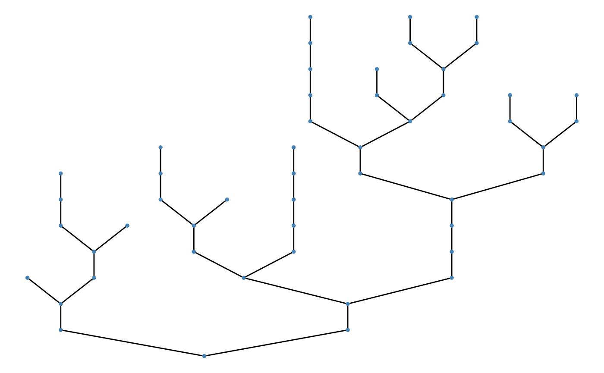
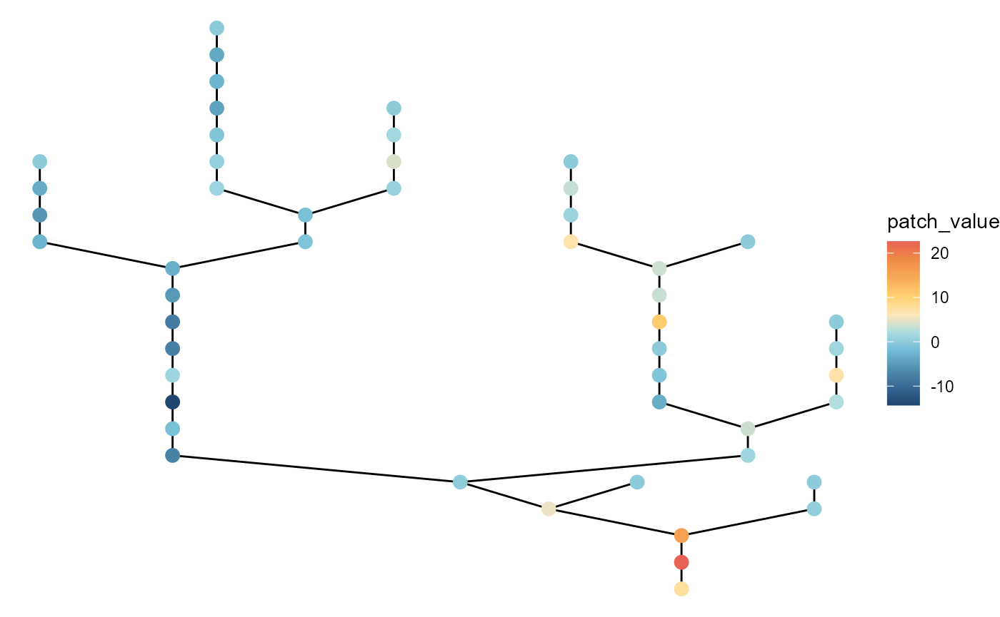
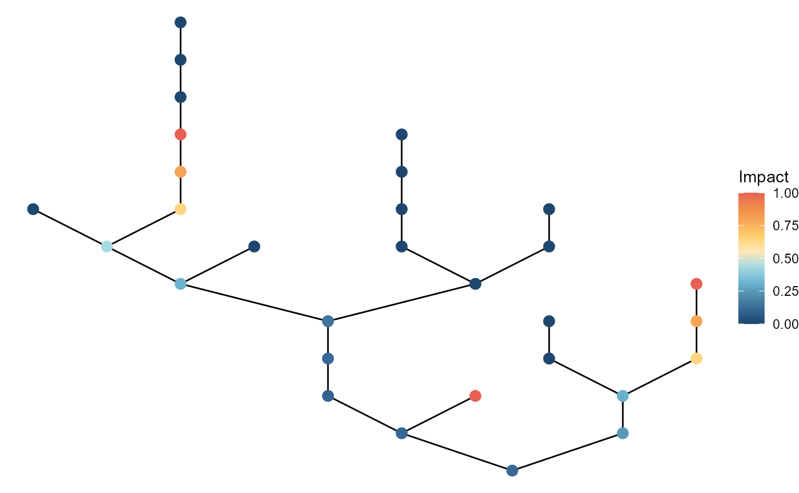
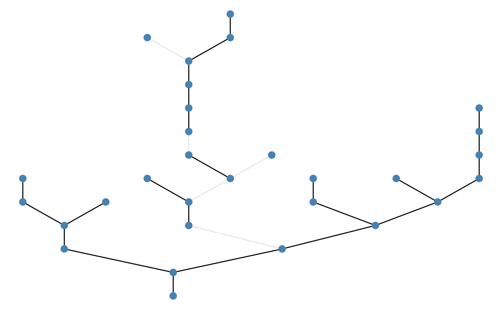
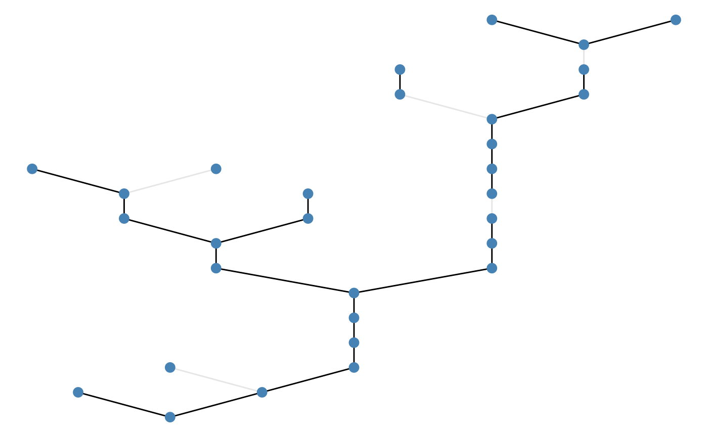

Basic usage
brnet() generates a random branching network with the
specified number of patches and the probability of branching. The key
arguments are the number of habitat patches (n_patch) and
the probability of branching (p_branch), which users must
specify. With these parameters, the function generates a branching
network through the following steps:
Draw the number of branches in the network. An individual branch is defined as a series of connected patches from one confluence (or outlet) to the next confluence upstream (or upstream terminal). The number of branches in a network is drawn from a binomial distribution as , where is the number of patches and is the branching probability.
Draw the number of patches in each branch. The number of patches in branch , , is drawn from a geometric distribution as but conditional on .
Organize branches into a bifurcating branching network.
The function returns:
adjacency_matrix: adjacency matrix.distance_matrix: distance matrix. Distance between patches is measured as the number of steps required to reach from the focal patch to the target patch through the network.-
df_patch: data frame (dplyr::tibble) containing patch attributes.- patch_id: patch ID.
- branch_id: branch ID.
- environment: environmental value at each patch (see below for details)
- disturbance: disturbance level (i.e., proportional mortality) at each patch (see below for details)
- n_patch_upstream: the number of upstream contributing patches (including the focal patch itself; akin to the watershed area in river networks).
Quick start
The following script produce a branching network with
n_patch = 50 and p_branch = 0.5. By default,
brnet visualizes the generated network using functions in R
packages igraph and ggraph
(plot = FALSE to disable):
net <- brnet(n_patch = 50, p_branch = 0.5)By default, patches are colored based on environmental values.
To view matrices, type the following script:
# adjacency matrix
# showing 5 patches for example
net$adjacency_matrix[1:5, 1:5]
#> [,1] [,2] [,3] [,4] [,5]
#> [1,] 0 0 0 0 0
#> [2,] 0 0 1 0 0
#> [3,] 0 1 0 0 0
#> [4,] 0 0 0 0 1
#> [5,] 0 0 0 1 0
# distance matrix
# showing 5 patches for example
net$distance_matrix[1:5, 1:5]
#> [,1] [,2] [,3] [,4] [,5]
#> [1,] 0 4 5 7 8
#> [2,] 4 0 1 7 8
#> [3,] 5 1 0 8 9
#> [4,] 7 7 8 0 1
#> [5,] 8 8 9 1 0The following script shows patch ID, branch ID, environmental values, disturbance values, and the number of upstream contributing patches for each patch:
net$df_patch
#> # A tibble: 50 × 5
#> patch_id branch_id environment disturbance n_patch_upstream
#> <int> <dbl> <dbl> <dbl> <dbl>
#> 1 1 1 -1.33 0.861 50
#> 2 2 10 -1.13 0.967 6
#> 3 3 10 -1.05 0.970 5
#> 4 4 7 -0.833 0.831 16
#> 5 5 7 -0.665 0.848 15
#> 6 6 13 -0.890 0.712 5
#> 7 7 13 -0.938 0.705 4
#> 8 8 13 -0.967 0.727 3
#> 9 9 13 -1.06 0.738 2
#> 10 10 13 -1.18 0.728 1
#> # ℹ 40 more rowsCustomize: visualization
Arguments: patch_label,
patch_size
Users may add patch labels using the argument
patch_label:


# number of upstream contributing patches
brnet(n_patch = 50,
p_branch = 0.5) %>%
ggbrnet(patch_label = "n_upstream")To change patch size, specify patch_size:

Customize: environment
Arguments: mean_env_source,
sd_env_source, rho,
sd_env_lon
Environmental values are generated as detailed below:
Environmental values for upstream terminal patches are drawn from a normal distribution as (arguments
mean_env_sourceandsd_env_source).Downstream environmental values are determined by an autoregressive process as (argument
sd_env_lon). At bifurcation patches (or confluence), the environmental value takes a weighted mean of the two contributing patches given the size of these patches (the number of upstream contributing patches): , where and .
Users may change the values of
(default: mean_env_source = 0),
(sd_env_source = 1),
(rho = 1), and
(sd_env_lon = 0.1). Increasing the value of
sd_env_source leads to greater variation in environmental
values at upstream terminals. The argument rho determines
the strength of longitudinal autocorrelation (the greater the stronger
autocorrelation). The argument sd_env_lon determines the
strength of longitudinal environmental noise.
# with large variation at headwaters
brnet(n_patch = 50,
p_branch = 0.5,
sd_env_source = 3,
sd_env_lon = 0.5,
rho = 0.5) %>%
ggbrnet()
# large local variation with no headwater variation
brnet(n_patch = 50,
p_branch = 0.5,
sd_env_source = 0,
sd_env_lon = 3,
rho = 0.5) %>%
ggbrnet()
Customize: disturbance
Arguments: mean_disturb_source,
sd_disturb_source , sd_disturb_lon
Disturbance values are generated as detailed below:
Disturbance levels for upstream terminal patches (i.e., patches with no upstream patch) are drawn from a normal distribution in a logit scale as .
Disturbance cascades downstream as in environmental values: . At bifurcation patches (or confluence), the disturbance value takes a weighted mean of the two contributing patches given the stream size of these patches (the number of upstream contributing patches): , where and .
Users may change the values of
(mean_disturb_source),
(sd_disturb_source) and
(sd_disturb_lon).
# with large variation at headwaters
brnet(n_patch = 50,
p_branch = 0.5,
sd_disturb_source = 3,
sd_disturb_lon = 0.5) %>%
ggbrnet(patch_color = "disturb")
# with large local variation with no headwater variation
brnet(n_patch = 50,
p_branch = 0.5,
sd_disturb_source = 0,
sd_disturb_lon = 3) %>%
ggbrnet(patch_color = "disturb")
Customize: environmental pollutants
Arguments: x, n_source,
p, q, pattern
From v.1.3.0, mcbrnet offers ptsource() function to
simulate propagation of environmental pollutants in a branching network.
ptsource() can specify:
xbrnet()objectn_sourcenumber of point sourcespstrength of downstream propagationqstrength of upstream propagationpatternspatial pattern of point sources -"random","cluster","upstream","downstream"
The function takes brnet() object as the first argument,
so it’s compatible with pipe %>%. The concentration of
pollutants has a value of 1.0 at point sources and decays with distance
as
in downstream
(
distance,
geometric coefficient of distance decay) and
in upstream. For example, if a focal location is 3 patches downstream
from the point source with
,
the concentration would be
.
By setting different values of p and q, users
can model the asymmetric propagation of environmental pollutants.
For example, the following script will add a new column
impact that represents the concentration of hypothetical
environmental pollutant:
y <- brnet(n_patch = 10) %>%
ptsource(n_source = 3,
p = 0.8,
q = 0)
y$df_patch
#> # A tibble: 10 × 7
#> patch_id impact point_source branch_id environment disturbance
#> <int> <dbl> <dbl> <dbl> <dbl> <dbl>
#> 1 1 2.36 1 1 0.163 0.964
#> 2 2 1.7 1 1 0.272 0.970
#> 3 3 0 0 5 0.473 0.879
#> 4 4 1 1 2 0.0756 0.972
#> 5 5 0 0 2 0.0314 0.974
#> 6 6 0 0 2 0.0124 0.979
#> 7 7 0 0 3 -0.586 0.995
#> 8 8 0 0 3 -0.525 0.994
#> 9 9 0 0 4 0.676 0.918
#> 10 10 0 0 4 0.783 0.908
#> # ℹ 1 more variable: n_patch_upstream <dbl>Also, easy to visualize the spatial pattern of pollution with
ggbrnet(). Just need to set
patch_color = "other" and
value_col = "impact".
brnet(n_patch = 30) %>%
ptsource(n_source = 3,
p = 0.8,
q = 0) %>%
ggbrnet(patch_color = "other",
value_col = "impact")Finally, it is possible to specify the spatial pattern of point sources. By default, the function generates point sources at random, but it may be more realistic to have some spatial clusters.
The "cluster" pattern randomly pick one location as a
point source, and the rest of point sources appear close to this initial
point source:
brnet(n_patch = 30) %>%
ptsource(n_source = 3,
p = 0.8,
q = 0,
pattern = "cluster") %>%
ggbrnet(patch_color = "other",
value_col = "impact")The "upstream" pattern pick point source locations from
smaller tributaries (i.e., based on number of upstream patches), but not
necessarily clustered:
brnet(n_patch = 30) %>%
ptsource(n_source = 3,
p = 0.8,
q = 0,
pattern = "upstream") %>%
ggbrnet(patch_color = "other",
value_col = "impact")
The "downstream" does the opposite (pick from larger
streams):
Customize: fragmentation
Arguments: x, rate,
pattern, p, n_barrier
frgm() will impose fragmentation to a network. The
function can specify:
x‘brnet’ object or adjacency matrixraterate parameter of exponential dispersal kernel (i.e., species attribute). This parameter defines the result dispersal matrix.patternfragmentation pattern; either “random” (random location of fragmentation), “upstream” (upstream edges are more likely to be fragmented), or “downstream” (downstream edges are more likely to be fragmented).ppassability of fragmented edges (probability)n_barriernumber of barriers
The arguments p and n_barrier define the
probability of traversing across an edge with a barrier and the number
of total barriers , respectively. Passability can be different among
barriers; in this case, the user must specify the passabilities of
individual barriers separately (as a vector with length
n_barrier). The barrier effect is cumulative. For example,
if one passes two barriers A (passability =
)
and B (passability
)
when moving from a given node node to another node, the original
movement probability
will be reduced to
.
Just like ptsource(), this function will take an output
from brnet() function but also accepts any adjacency
matrix. ggbrnet() will help you visualize fragmented edges
by specifying edge_weight = "passability".
Example: random pattern:
brnet(n_patch = 30) %>%
frgm(rate = 0.1,
p = 0.1,
n_barrier = 5,
pattern = "random") %>%
ggbrnet(edge_weight = "passability")
Example: upstream pattern:
brnet(n_patch = 30) %>%
frgm(rate = 0.1,
p = 0.1,
n_barrier = 5,
pattern = "upstream") %>%
ggbrnet(edge_weight = "passability")
Example: downstream pattern: